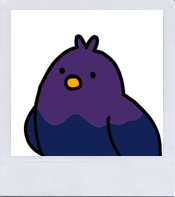
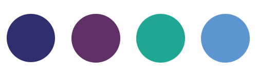
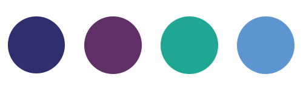

시원한 겨울 브라이트
#화려
#비니
#실버 악세사리

자세한 결과
겨울 브라이트는 겨울 쿨톤 중에서 가장 화려한 타입이며 쿨 베이스의 고채도 컬러나 선명한 컬러로 스타일링을 하는 게 좋아요.
립 컬러로는 화려한 핫핑크, 핏빛버건, 핏빛 레드를 사용하면 쿨톤의 시크한 매력을 살리기에 좋아요.
실버 악세사리와 딥블랙 헤어 컬러, 화려한 패턴 스타일링이 어울려요.
립 컬러로는 화려한 핫핑크, 핏빛버건, 핏빛 레드를 사용하면 쿨톤의 시크한 매력을 살리기에 좋아요.
실버 악세사리와 딥블랙 헤어 컬러, 화려한 패턴 스타일링이 어울려요.
나와 어울리는 컬러는?


대표적인 연예인
비니 채영 양요섭